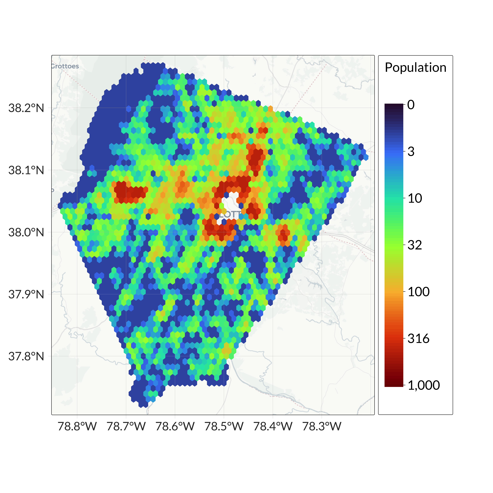
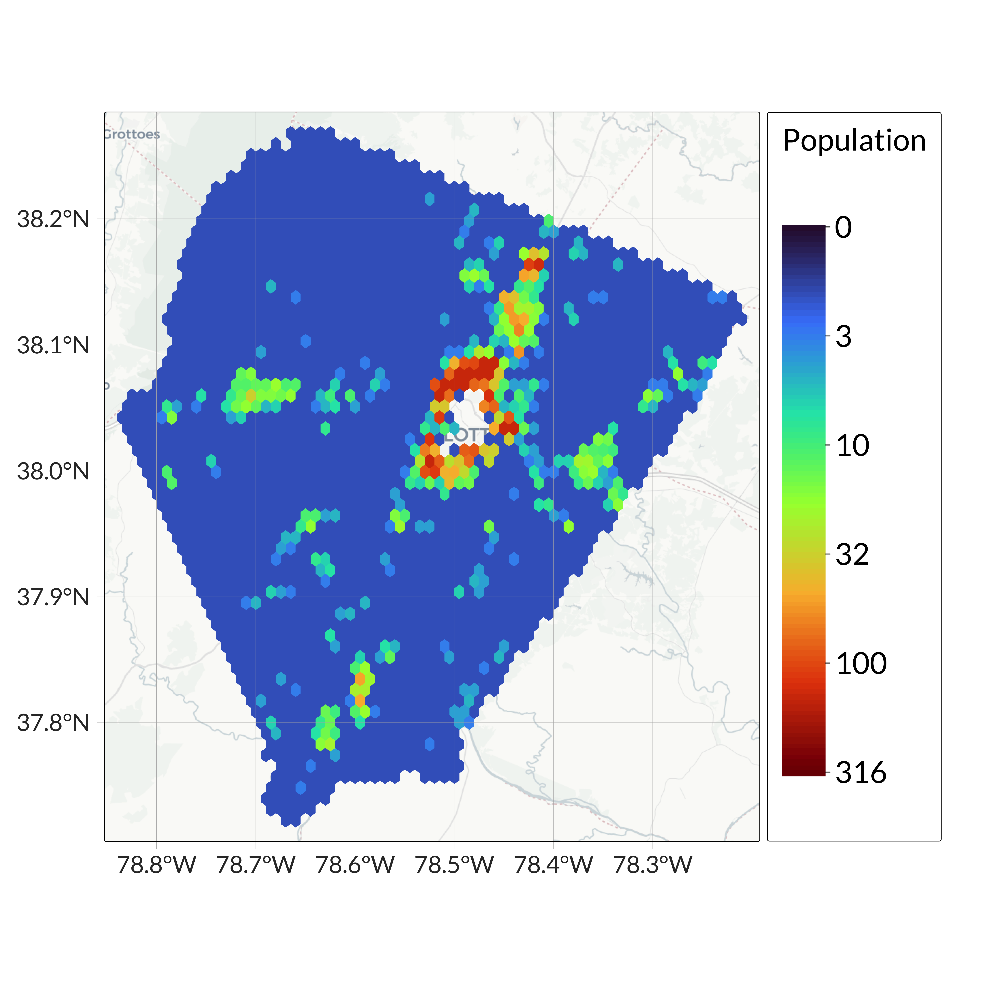
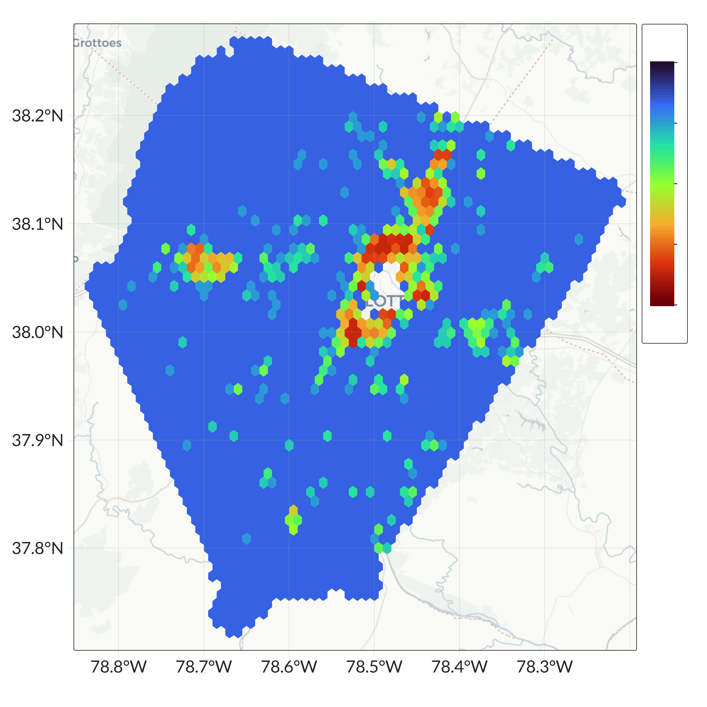
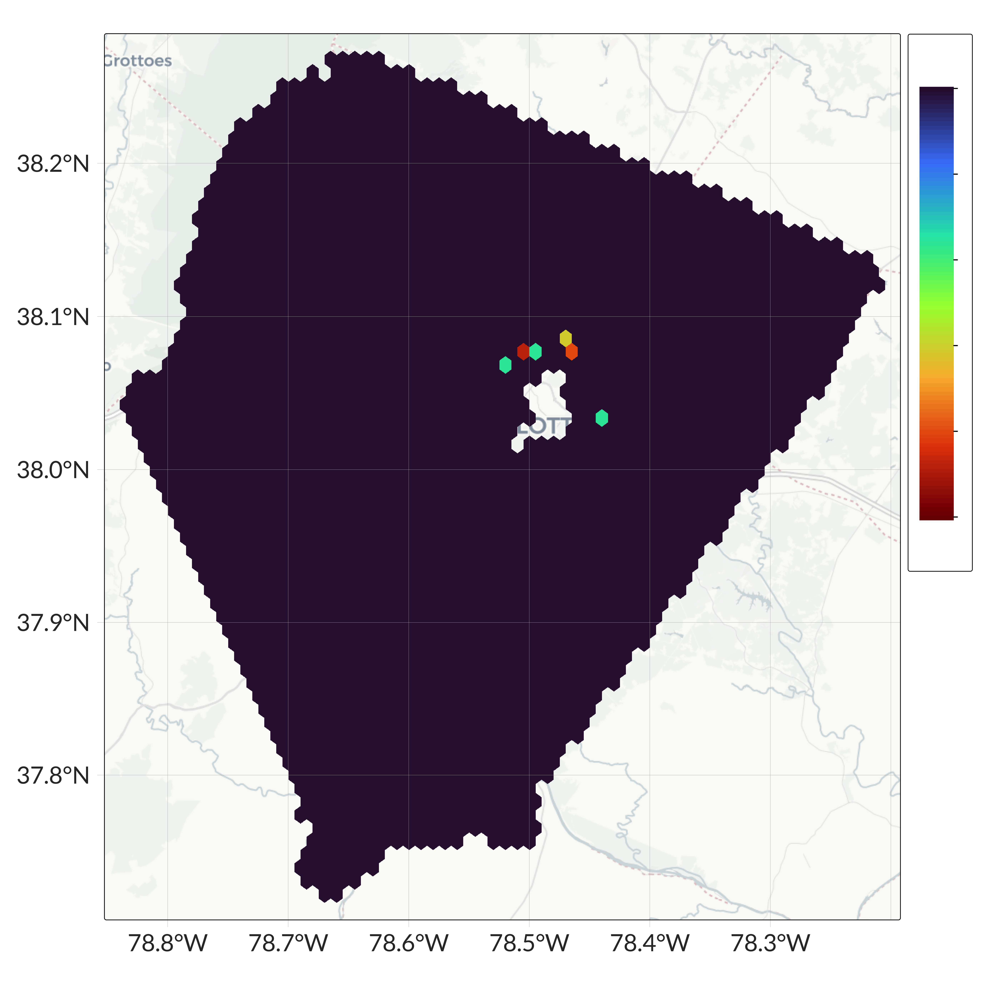

Albemarle County, Virginia
Where People Live
In 2024, Albemarle County was home to 107,686 people. In the map below, cooler colors (such as blue and purple) indicate less populated regions, while warmer colors (such as yellow and red) indicate more populated areas.
Albemarle County had a population density of 58 people per square kilometer, which is more dense than the national average of 37 people per square kilometer.
Albemarle County Population, 2024
{kind=link}
Figure Notes: The map uses a hexagonal grid to display population counts within each cell. Population values are shown on a log scale, with blue-purple hexagons indicating fewer people and red-yellow hexagons indicating more. The legend is restricted to the 2nd–98th percentiles. Data source: Gridded EIF.
Population Trend
The Albemarle County population grew by 39,170 people between 2000 and 2024, with an average annual growth rate of 1.9%. This is faster than the national average growth rate of 0.8%.
From 2000 to 2010, the Albemarle County population grew at an average annual rate of 2.53%. Between 2010 and 2020, it grew at a rate of 1.62% per year. From 2020 to 2024, the average annual growth rate was 1.05%.
Albemarle County Population Trend, 2000-2024

Figure Notes: The line chart shows annual population from 2000 to 2024. Population is shown on the vertical axis; year is on the horizontal axis. Data source: Gridded EIF.
Population by Age
In 2024, 19% of the Albemarle County population was under 18, a lower share than the U.S. The under-18 population was declining.
In 2024, 58% of the Albemarle County population was aged 19-65, a lower share than the U.S. The 19-65 population was declining.
In 2024, 21% of the Albemarle County population was over 65, a higher share than the U.S. The over-65 population was growing.
Share of Albemarle County Population by Age Group, 2000-2024
{kind=link}
Figure Notes: The line chart shows the share of the population in three age groups—under 18, ages 19–65, and over 65—for each year from 2000 to 2024. The vertical axis shows population share as a percentage. Data source: Gridded EIF.
Race & Ethnicity
Individuals are characterized as Hispanic, Non-Hispanic White, Non-Hispanic Black, Non-Hispanic Asian, and Non-Hispanic American Indian and Alaska Native (AIAN). A residual category including all Non-Hispanic Other individuals is constructed but not reported separately in the statistics.
White individuals made up 71.9% of the Albemarle County population, compared to 55.0% nationwide.
Black individuals made up 8.2% of the Albemarle County population, compared to 11.6% nationwide.
Hispanic individuals made up 4.5% of the Albemarle County population, compared to 15.8% nationwide.
Asian individuals made up 3% of the Albemarle County population, compared to 4.1% nationwide.
American Indian and Alaska Native (AIAN) individuals made up 0.2% of the Albemarle County population, compared to 0.8% nationwide.
Racial and Ethnic Composition of Albemarle County, 2000-2024
(On smaller screens or certain browsers, use the scrollbar at the bottom of the table to view all columns.)
Table Notes: The trend lines visualize population changes within Albemarle County from 2000–2024. The ‘Population Trend’ shows the change in absolute population, while the ‘Population Share Trend’ shows the change in the group’s percentage of the total. The final column shows the national share trend for comparison.
Population Maps by Race and Ethnicity
Albemarle County White Population, 2024 
{kind=link}
Figure Notes: The map uses a hexagonal grid to display population counts within each cell. Blue–purple hexagons indicate fewer people, while red–yellow hexagons indicate more. Scales vary across maps to reflect differences in overall population levels among racial and ethnic groups. Data source: Gridded EIF.
Albemarle County Black Population, 2024 
{kind=link}
Figure Notes: The map uses a hexagonal grid to display population counts within each cell. Blue–purple hexagons indicate fewer people, while red–yellow hexagons indicate more. Scales vary across maps to reflect differences in overall population levels among racial and ethnic groups. Data source: Gridded EIF.
Albemarle County Hispanic Population, 2024 
{kind=link}
Figure Notes: The map uses a hexagonal grid to display population counts within each cell. Blue–purple hexagons indicate fewer people, while red–yellow hexagons indicate more. Scales vary across maps to reflect differences in overall population levels among racial and ethnic groups. Data source: Gridded EIF.
Albemarle County Asian Population, 2024 
Figure Notes: The map uses a hexagonal grid to display population counts within each cell. Blue–purple hexagons indicate fewer people, while red–yellow hexagons indicate more. Scales vary across maps to reflect differences in overall population levels among racial and ethnic groups. Data source: Gridded EIF.
Albemarle County American Indian and Alaska Native Population, 2024 
{kind=link}
Figure Notes: The map uses a hexagonal grid to display population counts within each cell. Blue–purple hexagons indicate fewer people, while red–yellow hexagons indicate more. Scales vary across maps to reflect differences in overall population levels among racial and ethnic groups. Data source: Gridded EIF.
Adjusted Gross Income
Adjusted Gross Income (AGI) is defined as total (gross) income from all sources minus the specific adjustments listed on Schedule 1 of IRS Form 1040. AGI is aggregated to the household level.
In 2024, the average household AGI in Albemarle County was 213,759 dollars. The average annual growth rate in household AGI was 1.3%, compared with the U.S. average annual household AGI growth growth rate of 3.7%.
Income Distribution
Income deciles divide the national population into ten equally sized AGI groups. The first decile represents the 10% of the U.S. population with the lowest AGI, while the tenth decile represents the 10% with the highest AGI.
Albemarle County Adjusted Gross Income Distribution, 2024

Figure Notes: The figure shows the share of the Albemarle County population within each decile of the national AGI distribution. A bar above 10% indicates the county has a higher-than-average share of people in that national income bracket; a bar below 10% indicates a lower-than-average share.
Income Growth
The table below summarizes average household AGI by decile in 2024, along with annual AGI growth rates from 2000 to 2024. Each decile represents 10% of the population, ranked from lowest to highest income. The table also provides national averages for comparison. Positive growth rates indicate increases in average AGI over time, while negative values indicate declines.
Annual Adjusted Gross Income Growth by Decile, 2000-2024
(On smaller screens or certain browsers, use the scrollbar at the bottom of the table to view all columns. Click column headers to sort values.)
Table Notes: Values represent average household Adjusted Gross Income (AGI) and corresponding annual growth rates for each income decile from 2000 to 2024.
Income by Race & Ethnicity
The Asian population had the highest average household AGI, while the Black population had the lowest. From 2000 to 2024, the Asian population experienced the highest average annual AGI growth rate, whereas the Black population had the lowest.
Annual AGI Growth Rates, By Race & Ethnicity, 2000-2024
(On smaller screens or certain browsers, use the scrollbar at the bottom of the table to view all columns. Click column headers to sort values.)
Table Notes: The table presents average household AGI and the average annual AGI growth rate from 2000 to 2024 by race. Higher growth rates indicate faster increases in income over time.
Race-Specific Adjusted Gross Income Distribution in Albemarle County vs. the United States, 2024

Figure Notes: Dark blue bars represent the share of each racial and ethnic group within each decile of the national AGI distribution in Albemarle County. Light blue bars show the corresponding national distribution for each group. Together, these figures illustrate how AGI is distributed across racial and ethnic groups locally versus nationally. Differences between the dark and light blue bars indicate deviations between the Albemarle County and U.S. AGI distributions.